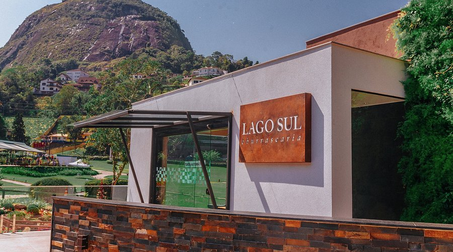
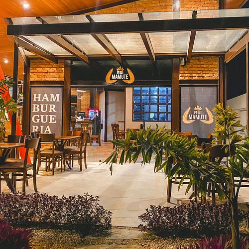
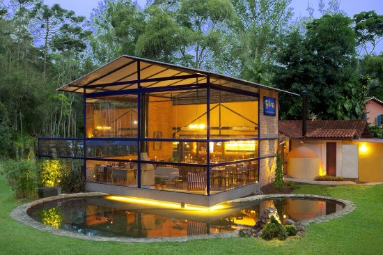

Gastronomia em Petrópolis
Conheça algumas das principais opções gastronômicas da cidade:
-
Lago Sul Churrascaria – Próxima ao Palácio Quitandinha, ideal para quem aprecia carnes nobres em ambiente espaçoso e tradicional.

-
Rei Mamute – Hamburgueria com opções artesanais e delivery rápido, bastante popular entre os jovens.

-
Restaurante Afrânio – Localizado em Araras, oferece culinária refinada com pratos franceses, italianos e frutos do mar, em meio à natureza.
